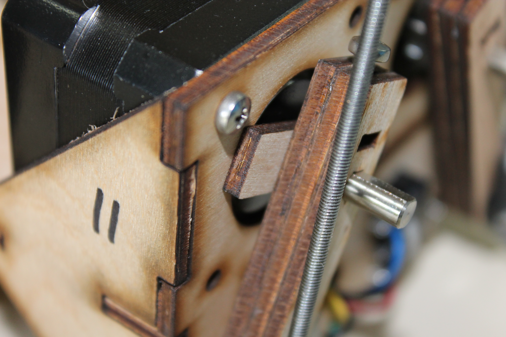
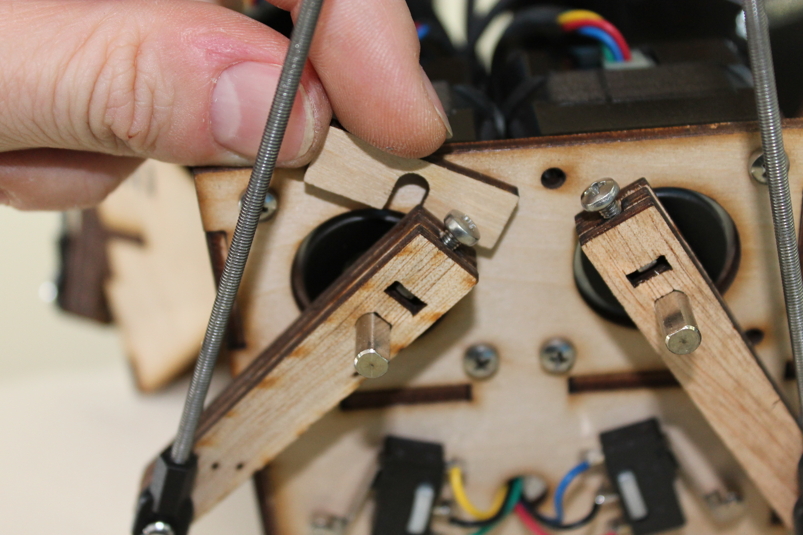
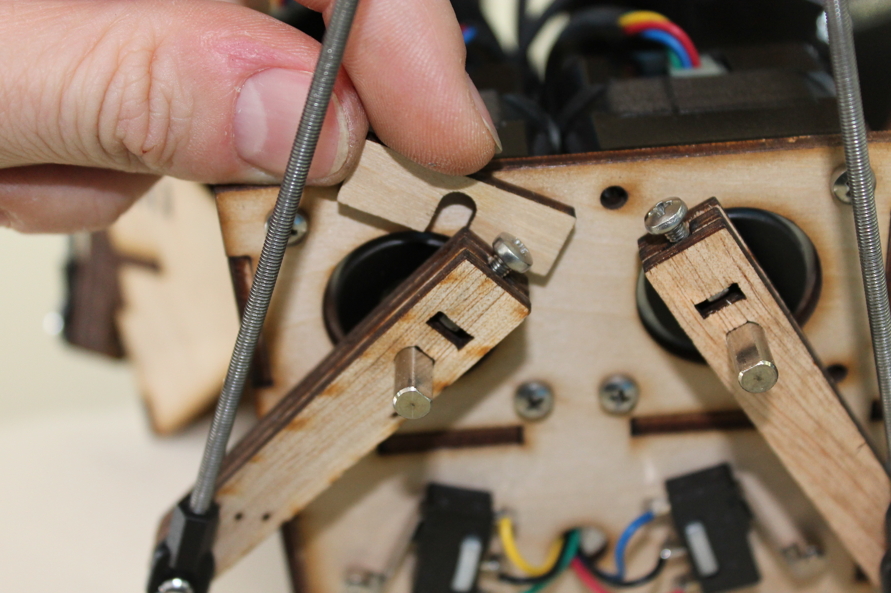

Index
« Prev | Next »
The arms
assemble the forearms
One ball joint goes on the end of each threaded rod.
There should be ~140mm of visible rod between the two ball joints.
The distance from center hole to center hole should be 167.5mm.
The holes on the rods should be aligned.
Use a small pair of pliers to press the metal ball into the plastic frame.
Attach the biceps to the forearms
Attach the forearms to the top
Make sure the arms are attached on the correct side.
Attach the biceps to the motor shafts

 

Use the spacer to make sure the biceps are at the correct distance from the frame.
Make sure the biceps are facing the correct direction.
Make sure the biceps can make contact with the limit switches.
« Prev | Next »